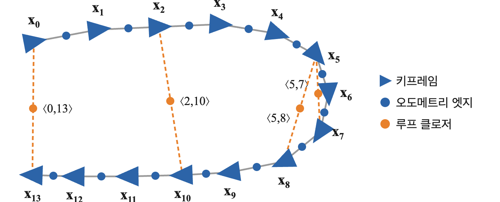
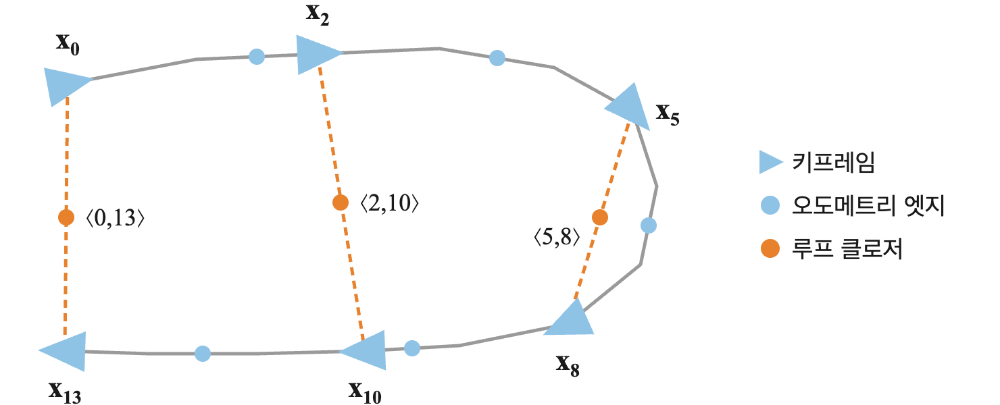
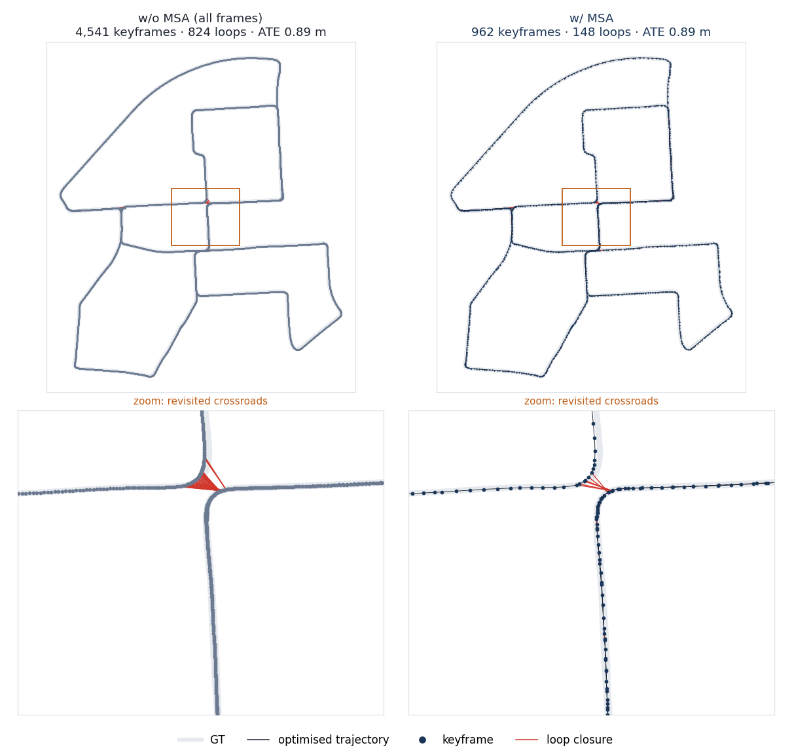
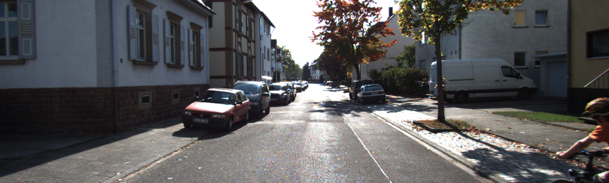
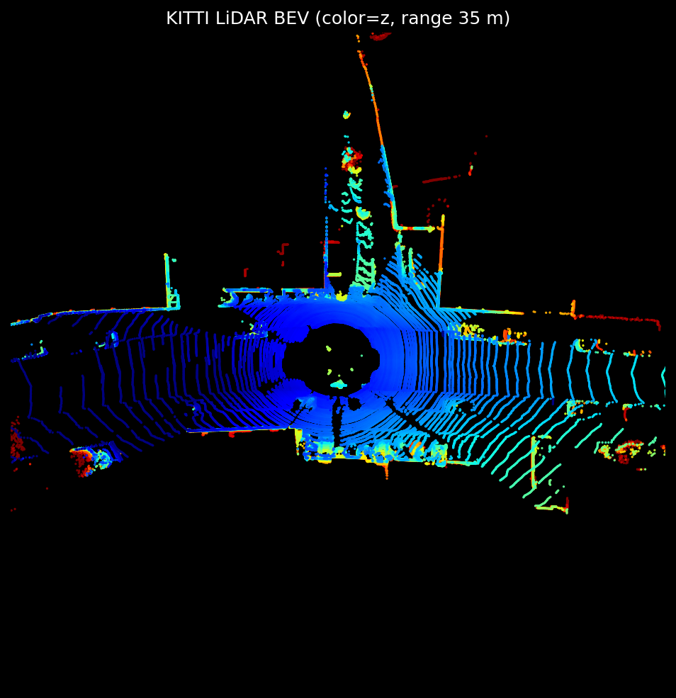
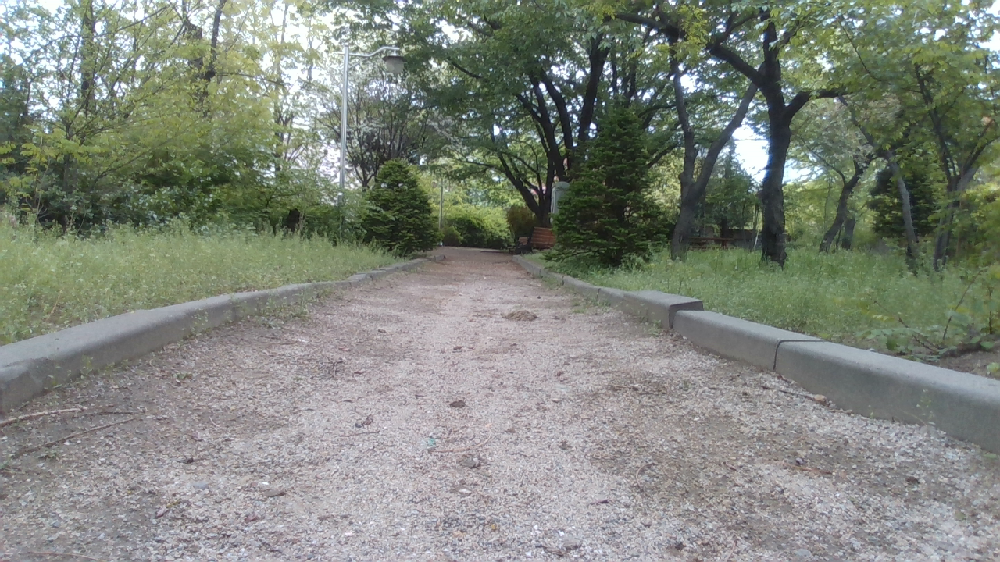
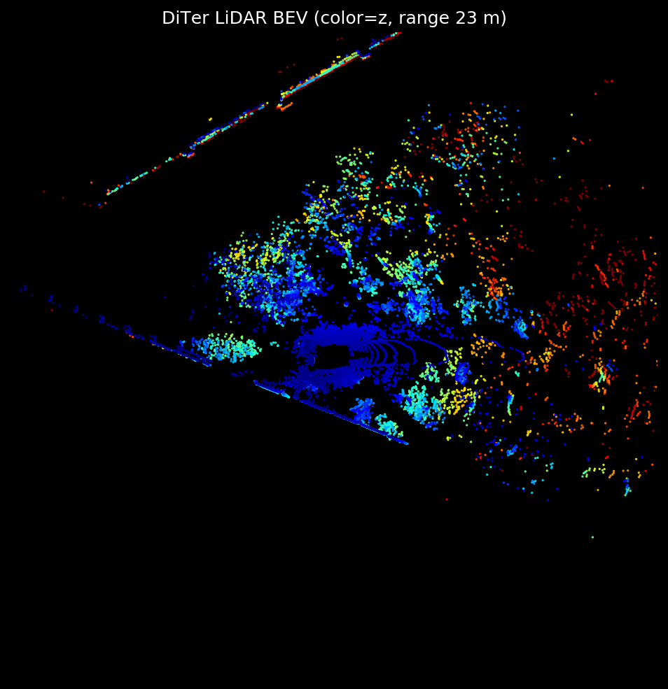
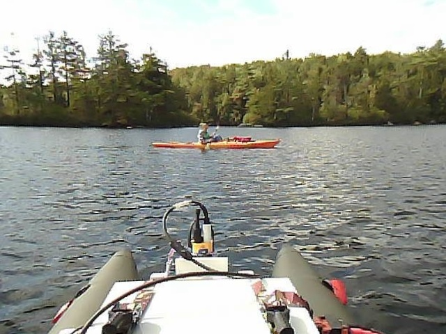
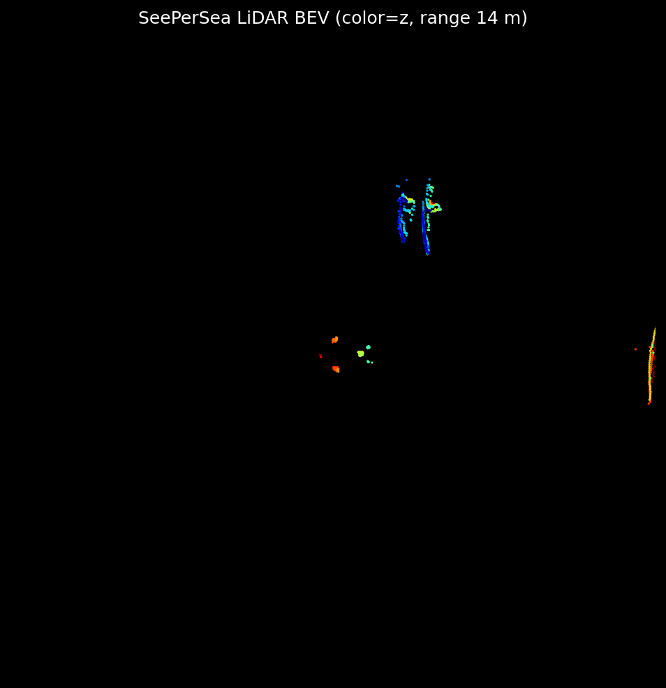
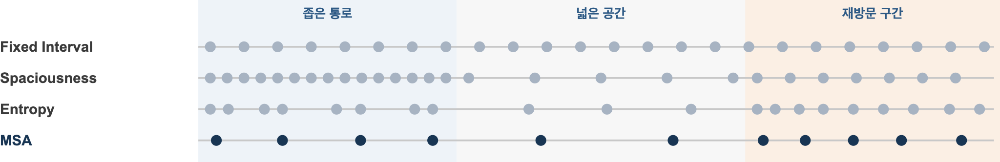

원 논문: N. Stathoulopoulos, C. Kanellakis, G. Nikolakopoulos, IEEE RA-L, vol. 11, no. 1, pp. 738–745, 2026. 이 페이지는 수업 프로젝트로 만든 리뷰·재현 페이지입니다.
01 OVERVIEW
Overview
TL;DR — 대규모 LiDAR SLAM에서 모든 프레임을 키프레임으로 저장하면 메모리와 루프 클로저 계산량이 함께 커집니다.
MSA (Minimal Subset Approach)는 슬라이딩 윈도우 안에서 중복도와 정보량을 따져 꼭 필요한 최소 부분집합만 키프레임으로 남깁니다.
논문에서는 정확도를 거의 유지하면서 메모리와 처리 시간을 크게 줄였습니다.
이 프로젝트는 논문을 세 가지 축으로 검증합니다.
01
Code Demo
SLAM의 Front-end와 Back-end를 모듈로 분리하고, MSA를 적용했을 때와 적용하지 않았을 때를 비교합니다.
02
Multi-Environment
도심(KITTI)뿐 아니라 논문에서 다루지 않은 야지(DiTer)와 해양(SeePerSea) LiDAR 데이터에도 적용합니다.
03
Comparison
Related Work의 키프레임 샘플링 방법(Fixed Interval, Spaciousness, Entropy)과 같은 조건에서 비교합니다.
02 METHOD
Front-end / Back-end Separation
전체 파이프라인을 세 부분으로 나눕니다. MSA는 고정하고 앞뒤의 Front-end와 Back-end를 바꿔 끼울 수 있게 만들어,
MSA가 특정 오도메트리나 디스크립터에만 맞춰진 방법이 아닌지 확인합니다.
FRONT-END
Odometry
1. LiDAR scan 입력
2. Odometry 추정KISS-ICP [2]
Swappable
KEYFRAME SAMPLING
MSA [1]
3. Sliding window 구성
4. Redundancy · Information 점수 계산
5. 최소 부분집합을 keyframe으로 선택
Fixed
BACK-END
Loop Closure & PGO
6. Place RecognitionOverlapTransformer [3]
7. Loop Verificationsmall_gicp [4]
8. Pose Graph OptimizationiSAM2 [5]
Swappable
w/o MSA vs. w/ MSA — 개념도
w/o MSA — 모든 프레임 저장

w/ MSA — 최소 부분집합만 저장

논문 Fig. 2 [1]를 두 그림으로 나눠 다시 그린 개념도입니다. 키프레임 번호와 개수는 원리를 보여주기 위한 예시이며 실제 데이터와 관계없습니다.
MSA는 비슷한 위치의 중복 키프레임을 걸러내 불필요한 루프 클로저 후보를 줄이지만, 지도 보정에 필요한 핵심 연결은 유지합니다.
03 CODE DEMO
Code Demo
KITTI 00 (4,541 프레임) 재생. 점은 키프레임, 빨간 선은 검증된 루프 클로저입니다. 같은 궤적을 MSA는 약 1/5의 키프레임으로 만듭니다.
w/o MSA vs. w/ MSA
재현 결과
공식 MSA 코드 [1]를 그대로 가운데에 두고, 앞에 KISS-ICP [2], 뒤에 OverlapTransformer [3] · small_gicp [4] · iSAM2 [5]를 붙여 SLAM 전체에서 측정했습니다.
데이터셋이 다르므로(논문: Newer College, 재현: KITTI 00) 절대값보다 All frames 대비 MSA의 변화 방향을 비교합니다.
Metric
All frames (논문)
MSA (논문)
All frames (재현)
MSA (재현)
Keyframes
–
–
4,541
962 (−79 %)
Memory ↓
65.8 GB
40.7 GB
8.83 GB
1.87 GB
Time ↓ (샘플링 + Back-end)
6,742 s
1,925 s
34.2 s
66.4 s
└ Back-end만
–
–
34.2 s
3.6 s
F1-max ↑
99.8 %
96.9 %
95.2 %
91.7 %
t. ATE 개선율 ↑
93.9 %
92.9 %
74.6 %
74.7 %
ATE (RMSE)
–
–
0.89 m
0.89 m
재현된 점: 키프레임 79 %, 메모리 79 %, Back-end 시간 89 %가 줄었고, F1-max는 조금 내려가며 ATE는 그대로입니다. 논문과 같은 경향입니다.
재현되지 않은 점: 전체 시간은 오히려 늘었습니다. 공식 MSA 구현이 순수 Python이라 윈도우마다 부분집합 512개를 계산하는 데 62.8 s가 들고,
저희 Back-end(OverlapTransformer + small_gicp)가 이미 빨라서 줄어든 Back-end 시간(30.6 s)보다 큽니다.
Memory는 키프레임 원본 스캔 크기 합, ATE 개선율은 KISS-ICP만 쓴 궤적(ATE 3.50 m) 대비입니다. 1단계(KISS-ICP 55.9 s, OverlapTransformer 272.7 s)는 공통이라 시간에서 뺐습니다.

최적화된 궤적(GT에 SE(3) 정렬). 아래는 재방문 교차로 확대: w/o MSA는 프레임마다 키프레임이 쌓이고 루프도 수십 개 연결되지만, MSA는 필요한 키프레임만 남겨도 같은 정확도로 지도를 보정합니다.
04 ENVIRONMENTS
Multi-Environment Evaluation
먼저 도심 환경의 KITTI로 논문 결과를 재현해 파이프라인이 제대로 동작하는지 확인합니다. 그다음 논문에서 다루지 않은 환경으로 넓혀,
구조물이 적은 야지나 특징이 거의 없는 수면에서도 MSA가 튜닝 없이 잘 동작하는지 확인합니다.


URBAN · 도심
KITTI [6]재현
차량 · Velodyne HDL-64E
논문 결과 재현


OFF-ROAD · 야지
DiTer [7]확장
사족보행 로봇 · LiDAR
비정형 지형


MARITIME · 해양
SeePerSea [8]확장
자율 수상선 · LiDAR + RGB
수면 환경
05 COMPARISON
Related Keyframe Sampling Methods
논문 Related Work에 나온 LiDAR 기반 방법 세 가지를 같은 Front-end · Back-end 조건에서 MSA와 비교합니다.
Method
방식
출처
Fixed Interval
1 · 2 · 3 m마다 키프레임
LIO-SAM [9], DiSCo-SLAM [10], LAMP 2.0 [11]
Spaciousness-based
공간 넓이에 따라 간격 조절
Chen et al. [12], Kim et al. [13]
Entropy-based
정보량이 큰 프레임 선택
Zeng et al. [14]
MSA
중복도 · 정보량 기반 최소 부분집합 선택
Stathoulopoulos et al. [1]

좁은 통로 · 넓은 공간 · 재방문 구간에서 각 방법이 키프레임을 어디에 두는지 나타낸 개념도입니다.
KITTI 00 결과
모든 방법이 같은 Front-end · Back-end · 파라미터를 씁니다. 비교 방법들도 공식 opt-key 구현을 그대로 호출했습니다.
Method
Keyframes
Memory
Back-end
샘플링
Loops
F1-max
ATE
All frames (w/o MSA)
4,541
8.83 GB
34.2 s
0.0 s
824
0.952
0.89 m
Fixed Interval 1 m
2,717
5.28 GB
12.5 s
0.2 s
514
0.948
0.90 m
Fixed Interval 2 m
1,541
2.99 GB
5.9 s
0.2 s
282
0.934
0.88 m
Entropy-based
1,722
3.34 GB
8.0 s
77.5 s
309
0.920
0.88 m
Spaciousness-based
1,183
2.30 GB
5.0 s
52.8 s
202
0.914
0.90 m
MSA
962
1.87 GB
3.6 s
62.8 s
148
0.917
0.89 m
MSA가 키프레임 · 메모리 · Back-end 시간이 가장 적습니다. 다만 KITTI 00은 구조물이 많은 도심이라 ATE는 방법 간 차이가 0.02 m 이내였고,
단순한 Fixed 2 m도 비슷한 정확도를 냈습니다. 차이가 드러날 환경(야지 · 해양)에서의 비교가 다음 단계입니다.
06 VIDEO
Video
공간지능특론 프로젝트 중간 발표
07 TRY IT YOURSELF
Try It Yourself
LiDAR 스캔 시퀀스를 넣고 비교할 방법을 고르면, Code Demo와 같은 파이프라인(KISS-ICP → 키프레임 샘플링 → OverlapTransformer · small_gicp · iSAM2)이
All frames(w/o MSA)와 고른 방법들을 같은 조건에서 돌리고 결과를 아래에 그립니다.
데모 서버 확인 중…
스캔 폴더나 파일을 여기에 끌어다 놓으세요.bin(KITTI 형식) · .pcd, 파일 이름 순서가 시간 순서 · 정확도(ATE · F1)를 보려면 poses.txt(KITTI 형식, 선택)와 calib.txt(선택)도 함께
git clone --recursive https://github.com/shyun-28/msa-keyframe.git
python run.py --config configs/kitti00.yaml --methods all msa
python page_assets.py # 이 페이지의 그림 · GIF 다시 만들기
원 논문 인용
@article{stathoulopoulos2026msa,
title = {A Minimal Subset Approach for Informed Keyframe Sampling in Large-Scale SLAM},
author = {Stathoulopoulos, Nikolaos and Kanellakis, Christoforos and Nikolakopoulos, George},
journal = {IEEE Robotics and Automation Letters},
volume = {11},
number = {1},
pages = {738--745},
year = {2026}
}
References
N. Stathoulopoulos, C. Kanellakis, G. Nikolakopoulos, “A Minimal Subset Approach for Informed Keyframe Sampling in Large-Scale SLAM,” IEEE RA-L, vol. 11, no. 1, pp. 738–745, 2026.
I. Vizzo et al., “KISS-ICP,” IEEE RA-L, 2023.
J. Ma et al., “OverlapTransformer,” IEEE RA-L, 2022.
K. Koide, “small_gicp,” JOSS, 2024.
M. Kaess et al., “iSAM2,” ICRA, 2011.
A. Geiger et al., “Are we ready for Autonomous Driving? The KITTI Vision Benchmark Suite,” CVPR, 2012.
S. Jeong, H. Kim, Y. Cho, “DiTer: Diverse Terrain and Multi-Modal Dataset for Field Robot Navigation in Outdoor Environments,” IEEE Sensors Letters, 2024.
M. Jeong et al., “SeePerSea: Multimodal Perception Dataset of In-Water Objects for Autonomous Surface Vehicles,” IEEE T-FR, 2025.
T. Shan et al., “LIO-SAM,” IROS, 2020.
Y. Huang et al., “DiSCo-SLAM,” IEEE RA-L, 2022.
Y. Chang et al., “LAMP 2.0,” IEEE RA-L, 2022.
K. Chen et al., “Direct LiDAR Odometry,” IEEE RA-L, 2022.
B. Kim et al., “Adaptive Keyframe Generation based LiDAR Inertial Odometry …,” ICRA, 2023.
Q. Zeng et al., “Entropy-based Keyframe Established and Accelerated Fast LiDAR Odometry …,” ITOEC, 2023.